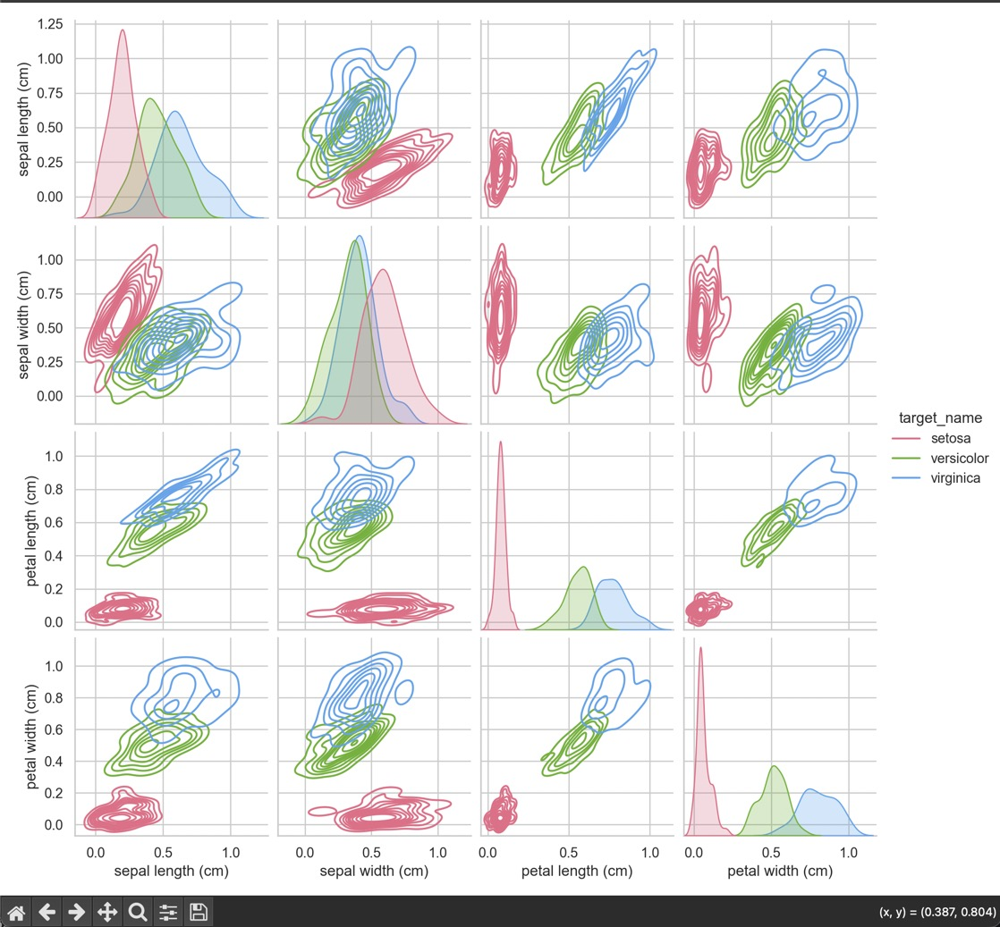
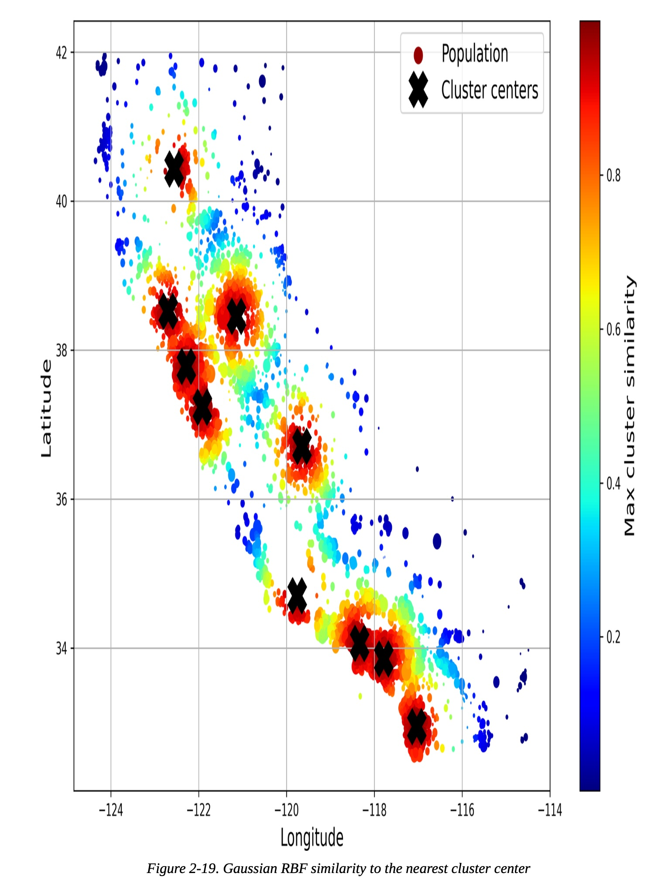
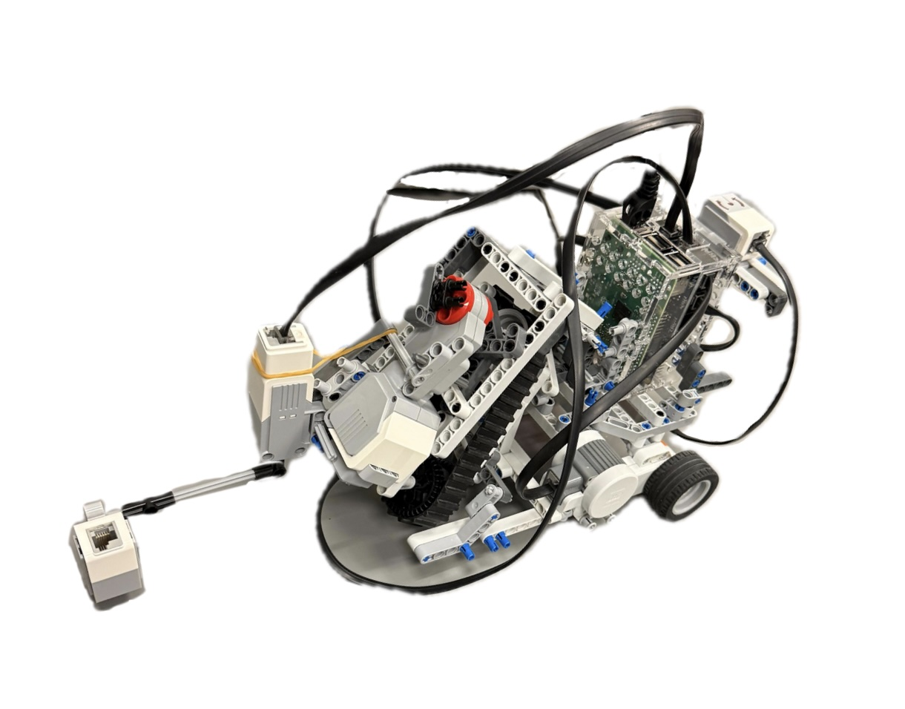

Machine LearningIris Species Classification
Engineered a Decision Tree Classifier achieving 97% accuracy. Implemented a full Scikit-Learn pipeline with MinMaxScaler and automated hyperparameter tuning via GridSearchCV.
2028
Expected Graduation
Born in London and raised in the South of France, I’ve spent my life navigating two different cultures. This background taught me early on how to look at the same problem from completely different angles. Today, as a second-year Computer Engineering student at McGill, I apply that same 'outside-the-box' perspective to the intersection of Machine Learning, AI, and hardware. I’m a firm believer that the best engineering doesn’t happen in a vacuum. My real strength lies in listening and teamwork, which is often neglected in certain projects. I’m not just interested in the code or the circuits; I’m interested in how we can put them together to create something meaningful, which is why engineering was the obvious path for me. With a strong foundation in Python, C, Java, and the numerous technologies displayed in my projects below, I am constantly building and exploring. My curiosity drives me to keep stepping out of my comfort zone, ensuring that I am always learning and tackling new challenges from fresh perspectives.
Computer Engineering Projects & Machine Learning Explorations.

Machine LearningEngineered a Decision Tree Classifier achieving 97% accuracy. Implemented a full Scikit-Learn pipeline with MinMaxScaler and automated hyperparameter tuning via GridSearchCV.

Machine LearningEnd-to-end regression project implementing a Scikit-Learn pipeline with custom transformers and hyperparameter tuning via GridSearchCV.

SystemsSecure auditing framework for decentralized systems focusing on data integrity and high-throughput verification.
Marny Brooker
© 2026 Marny Brooker